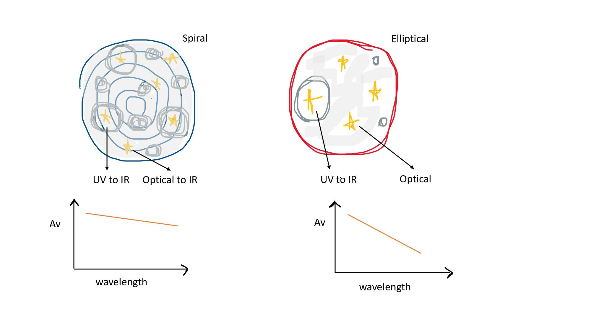
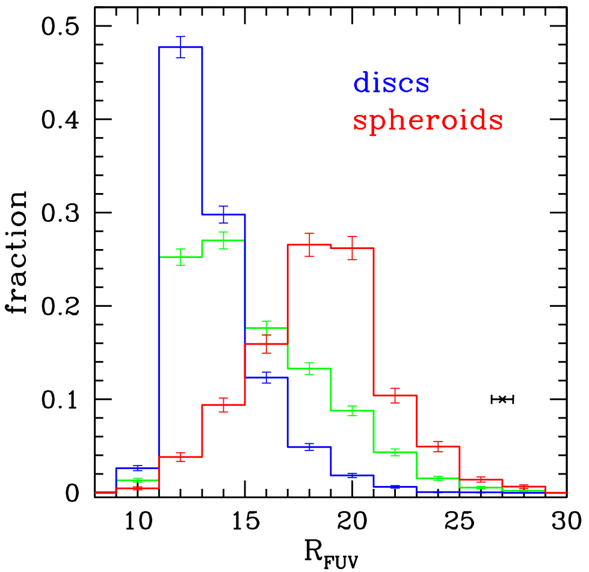

Accounting for the presence of dust in galaxies
Dust is as ubiquitous in galaxies as are stars, gases and dark matter. Although dust forms less than 1% of the mass of the interstellar medium, its importance can be gauged from the fact that dust reprocesses more than half of a galaxy’s stellar emissions. It absorbs the stellar light emissions (at UV and optical wavelengths) and re-emits in the infrared range of the spectrum. For example, our Milky Way would have been doubly bright in the optical if no dust was present in its interstellar medium. This effect of dust gets best encapsulated by the dust attenuation curve of the galaxy, which gives the optical depth of the galaxy as a function of wavelength. Analyzing data for thousands (~17000) of local galaxies (z<0.3), we find that the dust attenuation properties of a galaxy are dependent on its structure, i.e., its internal distribution of stars and dust.
Less Formal Description
Accounting for the presence of dust in galaxies
In this work, we have found that the behavior or the effect of dust present inside a galaxybis according to its distribution with respect to various stellar populations. We will try to explain the context and the significance of this finding in this article. We would like to begin by reminding you that dust is as crucial a component of a galaxy and as omnipresent as stars, gas, and dark matter. Dust is mainly composed of carbon and silicates, where the size of a typical dust grain ranges from 0.01 to 1 micron. For comparison, this is about 2 orders of magnitude smaller than the dust we see on our furniture. The importance of dust can very well be gauged from the fact that it reprocesses more than half of the galaxy’s total stellar light. Stars, as we know, emit mainly from UV to near-IR. These photons interact with the dust particles, get scattered and absorbed, and dust then re-emits the light in the middle and far-IR region of the spectrum. For example, our Milky Way would have been doubly bright in the optical if dust was not present.

Figure 1: Due to the increased presence of birth clouds and the denser interstellar medium in spiral galaxies, both UV and optical stellar emissions encounter dust on a similar level. Thus, the slope of the attenuation curve is not steep in the UV-optical range for spiral galaxies. In contrast, in the case of elliptical galaxies, only UV emission from newly formed stars encounters dust from the circumambient birth cloud. Optical stellar emissions escape due to a decreased presence of birth clouds and the less dense interstellar medium. Thus, the slope of the attenuation curve is steep in the UV-optical range for elliptical galaxies.
It is interesting to note that even though the dust has such a splendid effect on a galaxy’s stellar light, it constitutes a minuscule fraction of the galaxy’s total mass. Baryonic mass (i.e., non-dark matter mass) is nearly 1/6th of the galaxy’s total mass. Of this baryonic mass, 1/6th is in the interstellar medium. And of the total mass in the interstellar medium, 99% is gas, and 1% is dust. There are various mechanisms through which dust is understood to get formed, transformed, and destroyed inside a galaxy. It is mainly expected to form during the asymptotic giant branch (AGB) phase of the stars. Recent evidence also suggests that it could have formed around supernovae. But the mystery is how dust would have survived the shockwave associated with supernovae. It has also been proposed that dust might get formed around supermassive black holes. It gets destroyed either through UV rays and also gets consumed in the formation of new stars being part of the giant molecular clouds. It plays a critical role in the cooling and coagulation of such clouds. What this conveys is that the cycle of dust is intricately linked with both the star formation history as well as the future star formation rate of a galaxy.
Thus accounting for the effect of dust is a primary requirement for any reasonable estimation of a galaxy’s stellar mass and star formation rate. This effect of dust is accounted for through the dust attenuation curve of a galaxy. It gives the attenuation or optical depth of a galaxy as a function of wavelength. It describes how a galaxy’s light is affected by dust at each wavelength. So a general attenuation curve peaks at far UV and becomes negligible by the time it reaches IR. These curves are used as an input in the computation of a galaxy’s stellar parameters. Their accurate knowledge is crucial for simulations, modeling, and data analysis, basically at all places where the aim is to understand the formation and evolution of galaxies. If we do not know the attenuation curve accurately, there’s no way we can distinguish between a young dusty galaxy and an old non-dusty one. In tracing the evolution of galaxies, one of the most intriguing things is that the star formation rate density of galaxies has fallen by a factor of 5 to 10 since redshift 2. This could have been both due to the decrease in star formation efficiency as well the decrease in gaseous material inside galaxies. To solve this puzzle, accurate attenuation curves have to be known for the observed galaxies over the entire redshift range.
There has been a lot of progress in the estimation of these curves. Improving over the comparison methods, model methods have been successful in deriving these curves individually for each galaxy. Here the basic idea is to obtain the best match spectrum or Spectral Energy Distribution (SED) for a galaxy out of 100 thousand SEDs created with a whole range of model parameters. A major advancement has occurred with the availability of mid and especially far-IR measurements. Thanks to that, total IR luminosity works as a constraint on the dust emission and allows the attenuation parameters to be fitted freely. This has led to more detailed attenuation parameters and, thus, more accurate stellar parameters. The observations in the far-IR for a large number of galaxies have mainly happened over the last decade with space-based telescopes, especially Herschel. This information will allow you to appreciate the sample that we have chosen for our study. Stripe 82 is a 220-square-degree patch in the Northern Hemisphere of the sky. It has been the focus of many deep multi-wavelength photometric and spectroscopic surveys. Thanks to that, it has the range of most accurate dust attenuation and structural and stellar parameters computed through various dedicated efforts.
What we have done is that we have used all this information to probe the dependence of the shape of the dust attenuation curve on all other galaxy properties. This kind of observational undertaking is possible now with the availability of all the defining galaxy parameters for a large sample of local galaxies. Deciphering the dependence of dust on other galaxy properties is fundamental in our pursuit of understanding the processes that have governed the growth of galaxies. There is growing evidence that galaxies with different morphology types have witnessed characteristically different evolutionary paths. For example, ellipticals are understood to form during major mergers, and discs might have formed later through accretion, minor mergers, and secular evolution. If we are able to quantify the difference in their dust content and attenuation properties, we can obtain more insight into the dominant physical processes. So we have a sample of nearly 17000 local galaxies, covering the entire mass range. We divide these galaxies based on their dominant structural component, that is, if majorly the galaxy has a spheroid or elliptical-like structure or if it’s mainly a disc-like structure.
This classification is achieved with the application of multiple stringent criteria that include the placement of galaxies on the projection of the fundamental plane and the value of their global Sersic index. The sersic index defines the shape of a galaxy’s light profile. Galaxies with dominant spheroid components will follow the tight fundamental plane relation observed for local ellipticals, while those with dominant disc components will be outliers to such a relation. Galaxies that didn’t comply with the stringent multiple criteria were kept separately so as not to contaminate the two classifications. We found that the normalized slope of the attenuation curve is markedly different for the two structural types. The curve is twice as shallow for discs as it is for spheroids (see Figure 2). However, for the whole group of a given structural type, the slope values are constrained within a narrow range. Thus the shape of the dust attenuation curve is dependent on the dominant mode of stellar mass distribution inside a galaxy. Similar to structure, the curve is nearly twice as shallow for star-forming galaxies as for passive galaxies. We divide the galaxies into star-forming and passive based on their placement on the main sequence.

Figure 2. The fractional distribution of various structural types of galaxies, i.e., spheroid-dominated (red), disc-dominated (blue), and the rest (green), is shown with respect to the normalized slope of their dust attenuation curves in UV (R FUV ). Discs exhibit shallower slopes than spheroids emphasizing the role of structure in determining dust properties.
This dependence of the attenuation curve on star formation rate could be driven by the structure because discs are star-forming and spheroids are passive. But also, star-forming galaxies will have more dust clouds in addition to the diffuse interstellar medium. Either way, this adds to the evidence that the distribution of stars and dust inside a galaxy determines the curve properties. Another interesting thing to note is that the amount of dust is irrelevant to the shape. That’s why we see no correlation between the normalized shape and the total mass of the galaxy or the inclination of its disc component. Although more mass and higher inclination will result in the stellar light encountering more dust before reaching the observer, it doesn’t affect the shape of the curve. So, rather than the amount of dust encountered by the stellar light, it is the placement of the dust vis-a-vis the stars that determine the attenuation properties. Thus, all evidence suggests that it is the distribution of dust vis-a-vis various stellar populations that determines its behavior, i.e., star-dust geometry is the main determinant of the dust attenuation properties.
More Formal Description
Star-dust geometry: main determinant of dust attenuation in galaxies
Dust is as crucial a component of a galaxy and as omnipresent as stars, gas, and dark matter. Its importance can be gauged from the fact that it reprocesses more than half of the galaxy’s stellar light. The dust properties (mainly its amount and constituents) inside a galaxy depend on the star formation history of that galaxy. In addition to that, the dust properties of a galaxy are a critical determinant of its future star formation activity. Unraveling the connection between the properties of dust and its host galaxy is, therefore, a powerful diagnostic for the processes involved in its evolution (Dunne et al. 2011; Santini et al. 2014).
The properties of dust inside a galaxy are deduced by analyzing its effect on the galaxy’s stellar emission over the spectrum (Calzetti 1997; Draine 2003). This effect of dust is accounted for through the dust attenuation curve of a galaxy. The dust attenuation curve gives the optical depth of a galaxy over the spectrum, i.e., it describes how a galaxy’s light is affected by dust at each wavelength. So a general attenuation curve peaks at far UV and becomes negligible by the time it reaches IR. Constant efforts are made to compute attenuation curves for galaxies in a robust manner as it is a prerequisite for estimating galaxies’ stellar mass and star formation rate (Walcher et al. 2011; Conroy 2013).
The method that has lately gained traction for providing the most reliable attenuation curves for galaxies individually is the ‘model method’. This involves the creation of a library of dust-free spectrums or Spectral Energy Distributions (SEDs) spanning a large range of star formation histories and metallicities through the usage of stellar population synthesis models. The dust-free SEDs are then attenuated and compared with observed SEDs to obtain estimates of galaxy parameters and dust content. Recently, Salim et al. (2018) implemented the ‘energy balanced SED fitting’ technique on a quarter million local galaxies with far-UV to far-IR observations resulting in a detailed set of dust attenuation parameters for galaxies individually, covering the whole mass and stellar activity range.
For Stripe 82 - a 270 square degrees area in the sky - spectra as well as deep images are available for tens of thousands of local galaxies (Dawson et al. 2013; Annis et al. 2014). Utilizing that, Bottrell et al. (2019) have computed a detailed set of structural parameters (like size, ellipticity, bulge-to-total ratio, etc.) for all galaxies (∼17000) in this area in optical wavebands. Thus, detailed structural, stellar, and attenuation curve defining parameters - understood to be the most accurate to date - are available for all (∼17000) galaxies in the Stripe 82 region. In our work, we employ this data to perform a detailed investigation of the processes and properties responsible for the observed variation in dust attenuation parameters of galaxies covering the entire mass and stellar activity range.
We probed the cause of variation in the dust attenuation curves of galaxies by studying the trend of the normalized attenuation slope in the ultraviolet with the structure, star formation activity, total stellar mass, inclination, and optical depth of galaxies. The main findings are discussed:
- The attenuation curve for spheroid-dominated galaxies is twice as steep as that for disc-dominated ones. Both structural types occupy non-overlapping ranges of the attenuation slope value (10-20% overlap). Thus, stellar mass distribution within the galaxy is one of the main determinants of its dust attenuation behavior. More importantly, within a structural group, i.e., that of discs, slope values are constrained to a narrow range, emphasizing the primacy of structure in determining dust properties.
- The steepness of the attenuation curve for spheroids is driven by minimal attenuation in the optical bands compared to that in the ultraviolet. Thus, only newly formed stars get attenuated in the case of spheroids. In contrast, the shallowness of the curve in the case of discs is driven by near-uniform attenuation in UV and optical bands. Thus, all stars face attenuation in the case of discs, both due to a more dominant presence of ‘birth clouds’ and a denser interstellar medium (Charlot & Fall, 2000).
- The trends observed in the case of the structure are reflected in the case of star formation activity as well. The slope for passive galaxies is twice as steep as that for star-forming ones. This is expected because most (>85-90%) discs are star-forming, and spheroids are passive. Since star-forming galaxies are more gas-rich, clumpier and have a larger presence of birth clouds compared to passive galaxies, it provides further evidence that the distribution of stellar mass and dust inside a galaxy is the main cause of variation in attenuation curves (Inoue 2005).
- All our findings add up to the argument that if the extinction curve is assumed to be universal, the distribution of stars and dust, i.e., star-dust geometry, is the primal determinant of the attenuation properties of a galaxy. Recently, under similar assumptions, Narayanan et al. (2018) have shown through simulations that star-dust geometry drives the variation in attenuation curves. Our results confirm that.
References:
- Dunne L. et al., 2011, MNRAS , 417, 1510
- Santini P. et al., 2014, A&A , 562, A30
- Calzetti D., 1997, AJ , 113, 162
- Draine B. T., 2003, ApJ , 598, 1017
- Walcher J., Gro v es B., Budav ári T., Dale D., 2011, Ap&SS , 331, 1
- Conroy C., 2013, ARA&A , 51, 393
- Salim S., Boquien M., Lee J. C., 2018, ApJ , 859, 11
- Dawson K. S. et al., 2013, AJ , 145, 10
- Annis J. et al., 2014, ApJ , 794, 120
- Bottrell C., Simard L., Mendel J. T., Ellison S. L., 2019, MNRAS , 486, 390
- Charlot S., Fall S. M., 2000, ApJ , 539, 718
- Inoue A. K., 2005, MNRAS , 359, 171
- Narayanan D., Conroy C., Dav é R., Johnson B. D., Popping G., 2018, ApJ, 869, 70
Original paper: Star-dust geometry main determinant of dust attenuation in galaxies
First Author: Sonali Sachdeva
Co-authors: Biman B. Nath
First author’s Institution: Raman Research Institute(RRI), Bengaluru, 560080; India